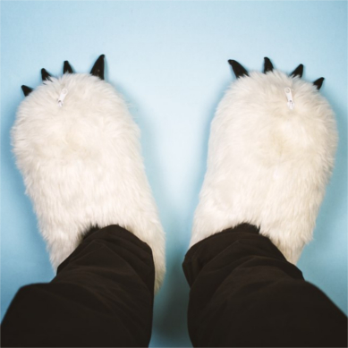
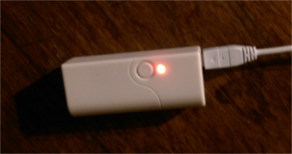
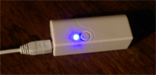
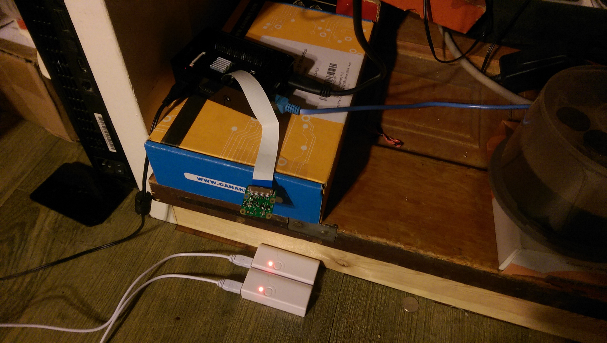
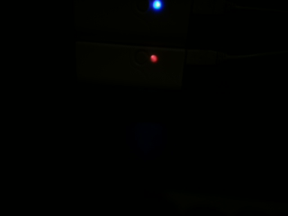
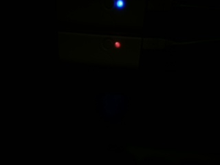
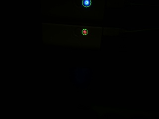

Detecting LED Changes with a Raspberry Pi Camera
First off, the code.
TL;DR
I used OpenCV's Python bindings to process pictures of my slipper batteries on a Raspberry Pi. I schedule that script with a systemd timer to run every minute; it sends me a text via IFTTT if they're done charging.
The Problem
This Christmas my awesome girlfriend got me the best present: heated slippers.  I suffer from chronically cold feet in the winter, and these do just the trick. Mine came with batteries that charge via USB. While they're charging the LED is red,  but when they're full they switch to blue.  I wanted a text alert when that happened so I didn't have to keep checking on them.
{kind=link}
I'm going to be moving around a lot in the coming months, and I would like to be able to move my Pi around to do other projects. I don't want to tweak my program every time I touch something. Therefore my solution should tolerate changes in distance, angle, position, and lighting.
Thinking Up the Solution
The simplest solution is detecting the change in signal electrically; some high voltage somewhere makes red, somewhere else is blue, etc. But I don't want to take my battery apart. So let's try machine vision. I have a Raspberry Pi 3 sitting around doing server stuff, so let's hook up a camera and detect the LEDs that way.
Ground Work
OpenCV
I've never done any image manipulation programmatically, so some naive googling led me to OpenCV, which is apparently a pretty popular computer vision library. I've never used this library before. I chose to use the Python bindings over C++ for this project to make exploring the functionality a little easier: open up an interpreter, a /tmp/test.py in another window, and have at it.
I used OpenCV 3.2, because it's what my Pi's Linux distrobution (Arch) provided. I went through some of the OpenCV 3.2 tutorials and 2.4 tutorials to get my feet under me while taking note of anything that looked relevant.
The OpenCV documenation is pretty good. The Python bindings are not explicitly documented very well, but the parallels with the C++ structure are fairly obvious, so the documentation is practically interchangeable. The only trouble I encountered was with the SimpleBlobDetector, but I'll get to that later.
Raspberry Pi Camera
There's two versions: the regular camera (for regular use, which I have), and NoIR (for low-light usage, which I do not have).
For help configuring it on Arch Linux, I used the Wiki page. My
/boot/config.txt looks exactly like the wiki example, and I added
/opt/vc/bin to my PATH.
raspistill does not have a man page, but $ raspistill -? or $
raspistill --help has a lot of information. Outside of that
command, I didn't find anything helpful, so experimentation was in
order.
Texting
I did an IoT workshop on campus last year, and I've been itching to use some of the cool stuff I learned there. One of the things I learned was how to trigger SMS texts through an IFTTT recipe. Thanks to the Maker Channel, you can trigger an IFTTT recipe from anything that can perform a POST request. Python happens to have a great HTTP library "for humans" called Requests.
Scheduling Checks
The program needs to check up on the batteries regularly so I can get up-to-the minute alerts! I figured there were two ways to do this:
- Call
sleepat the end of a bigwhileloop - Make a
cronjob
I decided #2 was best because crond is probably already running,
which means less overhead. I also assume cron is better than me
at sheduling after approx. 38 years of development. Plus this was
an excuse to finally learn how to make a cron job!
Oops -- I use Arch Linux on the Pi, which uses systemd, which does
not use cron. Systemd instead has timers. Oh well, I'm obviously
not attached to cron, guess I'll learn timers this time.
Data Collection
Initial Observations
Before any decisions could be made I needed to know what kind of pictures I could get with the Raspicam. That requires a controlled environment: unmoving camera, stable lighting, and fixed battery positions. I don't have a fancy tripod, so I just taped the camera in place, left the dining room light on, and marked off the battery positions with tape. 
With this setup $ raspistill -o test.jpg produced a photo like
this. I did not inline that because it's a 3280x2464
photo. That's waaayyy more info (and therefore processing
required) than I need. It also took a while to take the photo. So I
ended up with $ raspistill -w 320 -h 240 -t 1 as my basic
photo-taking command.
{kind=link}
An astute reader would notice I didn't have any monitors or
keyboards plugged into my Pi. I only work on my Pi remotely, over
SSH. So how do I view the data I collect? I store all my data in a
pics/ directory on the Pi, mount that directory locally via
sshfs, and then open the test image, e.g. pics/test.jpg, in
a browser tab. That way I can just overwrite test.jpg with
another experiment and all I have to do is refresh the tab!
A Breakthrough
I tested various light conditions: extreme light by shining a
flashlight from point blank range; regular light with the dining
room's regular incandescent fixtures; low light by casting a
shadow in regular light; and no light by turning off all the
lights. I could not find a combination of raspistill options that
produced good results in all conditions, so I settled on regular
light. I intend to develop an approach for low light and no light
in the near future.
In regular light I could emphasize the LEDs by slowing the shutter
speed with -s 20000 thereby collecting more light in the
image. The real breakthrough was -ex spotlight which nearly
isolated the LEDs all by itself, producing images like this

Taking an Approach
First Failure
I developed an initial approach from what I learned in the OpenCV tutorials: The light is emitted in a circle, so I'll detect circles with Hough Circles, find the lights, measure the colors, and other vague goals. Turns out it's difficult to "find the lights" amongst all the potential circles (power buttons, wood swirls, reflections, etc), so I got no further than that.
Getting Somewhere
I read some more, and happened upon Blobs. I decided I could turn the bright LEDs into blobs by using a threshold to abtain only the brightest pixels. I'd use those blobs as masks when measuring the colors of the LEDs. When they're both blue, it's done!
Original Image 
Grayscale
After Thresholding
After Thresholding with Blob Keypoints Highlighted (black center dot) and Circled (green, radius = 2 * blob_radius)
Original with Blob Keypoints Highlighted (black center dot) and Circled (green, radius = 2 * blob_radius) 
Measurements
Since I have no computer vision experience, I think my approach for measuring blue vs. red may be rudimentary: find the mean value of the pixels in the blob, and if the B (blue) component is greater than the R (red) component, then it is emitting blue and therefore charged, otherwise it is still charging. This works for me, for now.
The Code
Python
Python 2
Logging
You don't really have to think too much about this; anything you
print to stdout will get recorded by journalctl with the
appropriate information, so just print to your heart's desire
Temporary File
We'll need a temporary file for storing images. mkstemp from
tempfile with a '.jpg' suffix does the trick. I make sure to
delete this file when I'm done.
Subprocess
I use check_call from subprocess to do my raspistill
bidding. It's important to use the absolute path to the binary
because systemd will be handling the script's execution so we
want to avoid PATH dependencies. It's also important to wrap this
in a try-except block in case an error occurs with the command or
camera and we can log that appropriately. Remember to exit with
non-zero status!
Lighting Switch
As I said earlier, I'd like to develop an approach to low-light
scenarios in the future. To leave this door open, I let main()
call either day() or night() depending on the lighting
conditions detected. For now I'm detecting the difference by
measuring the mean value of a grayscale image, my hypothesis being
that a higher mean correlates to brighter lighting conditions. I'm
not confident about this method, but it works for now.
Image Preparation
Often you'll find some OpenCV methods require single-channel grayscale images, others require multi-channel BGR images, and still other's take either one, semmingly at random. Just make sure you're reading the docs carefully before reaching out to StackOverflow.
In this step I convert the image to grayscale and apply the
threshold. I have a variable for each step, i.e. original,
grey, thresh, etc. I could have jammed a bunch of these into a
big one-liner, but this makes it easier to debug, step-through,
and log. I determined the threshold empirically; thanks to -ex
spotlight there's a lot of wiggle room here.
Blob Detection
Of vital importance here is setting up your params in preparation
for constructing the SBD (SimpleBlobDetector). A careful reading of
the docs will show that SBD's default constructor will search for
dark blobs, but our blobs will be perfectly white (duh, it's a
binary image), so we need to set blobColor = 255. By virtue of
the binary image after thresholding we don't need to filter by any
other values, so set all the filters to False. Finally construct
your SBD and detect the keypoints corresponding to your blobs.
Masking and Measuring
Now for each keypoint (read blob (read LED)) detected, we want to use it as a mask, measuring the mean BGR value over the masked area.
We'll get the original dimensions using .shape() (I couldn't find
documentation for this method, sorry!). Then use those dimensions
to start our mask with a completely black image using
numpy.zeros(). Next we'll draw a white disk (i.e. filled-in circle)
on the mask at the location of the keypoint/blob/LED using the
keypoint properties pt and size (which is equivalent to the
diameter of the blob!).
Now get the mean over the masked area, and compare the B and R components!
Python Wrap-Up
If any one of them is still charging, i.e. more red than blue, then we can just return 0 immediately. If they are all done charging, then we need to trigger the IFTTT recipe that sends the text, stop the timer, and return 0.
IFTTT Recipe
Sign Up
If you haven't already, create an IFTTT account. Be careful, IFTTT's account creation process is a little, relaxed.
Create the Recipe
- Click on your account name in the top right corner, and in the drop down menu choose "New Applet".
- Click on the big blue "+ this" link, then choose "Maker", then click "Connect".
- Choose "Receive a web request". This is the trigger mechanism, performed via HTTP POST request.
- Enter an event name and press "Create trigger". Mine is "slippers_charged". It's pretty arbitrary, but it will end up in the URL for the request
- Click on the big blue "+ that" link, then choose "SMS", then click "Connect".
- Enter your phone number in the pop-up window and click "Send PIN". Once you get the PIN on your phone, enter it in the appropriate field and press "Connect".
- Choose "Send me an SMS"
- Enter the message you'd like to receive. I didn't use any JSON variables, but if I had, they'd be sent via JSON in the request and interpreted here. Mine says "Your slippers are done charging!". Press "Create action".
- Press "Finish".
Test the Recipe
Without signing out of IFTTT, go to the Maker website. It's not obvious that this place even exists, but it's useful. On this page is your API key, don't share this with anybody! Don't put it in a public repo!
Click on "How to trigger events" or your API key to get
instructions for testing the recipe. It can be done by entering a
URL into a browser, or a simple curl command from the terminal.
Add It to the Script
Right before your return from main() in the script, call
requests.post() on the trigger URL. That's it!
Systemd Timer
The Arch Wiki page is always useful, but I found Jason's Blog to be much more pragmatic.
My timer file:
[Unit] Description=Checks slipper charging status every minute [Timer] OnBootSec=1min OnUnitActiveSec=1min Unit=slipper_status.service [Install] WantedBy=multi-user.target
My service file:
[Unit] Description=Check slipper charging status [Service] Type=simple ExecStart=/home/conrad/pics/imgedit.py
Start the timer with # systemctl start slipper_status.timer. Make
sure to end the timer in the script when appropriate with a
subprocess call to systemctl stop slipper_status.timer. You can
check on the timer with $ systemctl list-timers --all. You can
check on the scripts logging output with journalctl -e.